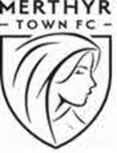

Trade Mark Journal No.2025/039 26 September 2025
UK00004256677 29 August 2025 (16,25,26,35,41)

- Class 16
- Printed publications; matchday programmes; newsletters; magazines; commemorative booklets; posters; postcards; calendars; diaries; greeting cards; stickers; trading cards; printed certificates; printed tickets; printed vouchers; paper bags; wrapping paper; gift tags; stationery; pens; pencils; erasers; notebooks; journals; exercise books; folders; printed educational materials; children’s activity books; colouring books; printed coaching manuals; printed promotional flyers; brochures; printed signage; letterheads; envelopes; hang tags; product labels; printed membership forms; printed application forms. .
- Class 25
- Clothing; sportswear; leisurewear; replica football shirts; replica shorts; replica socks; training tops; training shorts; tracksuits; jackets; rain jackets; polo shirts; t-shirts; singlets; hoodies; sweatshirts; fleeces; base layers; thermal wear; scarves; gloves; hats; beanies; baseball caps; footwear; sports footwear; socks; slippers; headbands; wristbands; belts; pyjamas; nightwear; underwear; swimwear. .
- Class 26
- Badges for wear, not of precious metal; embroidered badges; woven badges; iron-on patches; sew-on patches; ornamental patches; appliqués; ribbons; rosettes; decorative textile motifs; buttons; fasteners; zippers; hook and loop fasteners; belt clasps; lace trimmings; elastic ribbons; textile labels; name tags; decorative pins; novelty pins; armbands; wristbands; hair bands; scrunchies; hair grips; hair slides; hair clips; brooches (clothing accessories); hat ornaments (not of precious metal). .
- Class 35
- Retail services connected with the sale of clothing, footwear, headgear, printed publications, stationery, badges, patches, belts, scarves, gloves, ties, handbags, wallets, sunglasses, jewellery, hairbands, hair clips, pens, pencils, pencil cases, bookmarks, easers, rulers, desk organisers, keyrings, lanyards, tote bags, water bottles, mugs, phone cases, pin badges, embroidered motifs, iron-on transfers, and fabric labels ; online retail services relating to sportswear, leisurewear and club-branded goods namely clothing, headgear, belts, scarves, gloves, ties, bags and accessories namely, jewellery, hairbands, hair clips, water bottles, stationary and printed matter, pens, pencils, pencil cases, bookmarks, erasers, rulers, desk organisers, fabric labels, iron-on transfers, embroidered motifs, pin badges and printed materials; advertising and promotional services; marketing services; business administration of sports clubs; organisation of promotional campaigns; sponsorship search; merchandising services; provision of information and advisory services relating to all the aforesaid. .
- Class 41
- Organisation of football matches; provision of sports facilities; football coaching; training services relating to football; organisation of sports competitions; entertainment services in the nature of football games; fan engagement events; club hospitality services; organisation of community sports events; educational services relating to football; youth development programmes; publication of matchday programmes and newsletters; arranging and conducting of workshops, seminars and conferences in the field of football; ticket reservation services for sporting events; fan club services; provision of online non-downloadable videos and publications relating to football; live entertainment services; organisation of award ceremonies. .
MERTHYR TOWN FC SOCIETY LIMITED